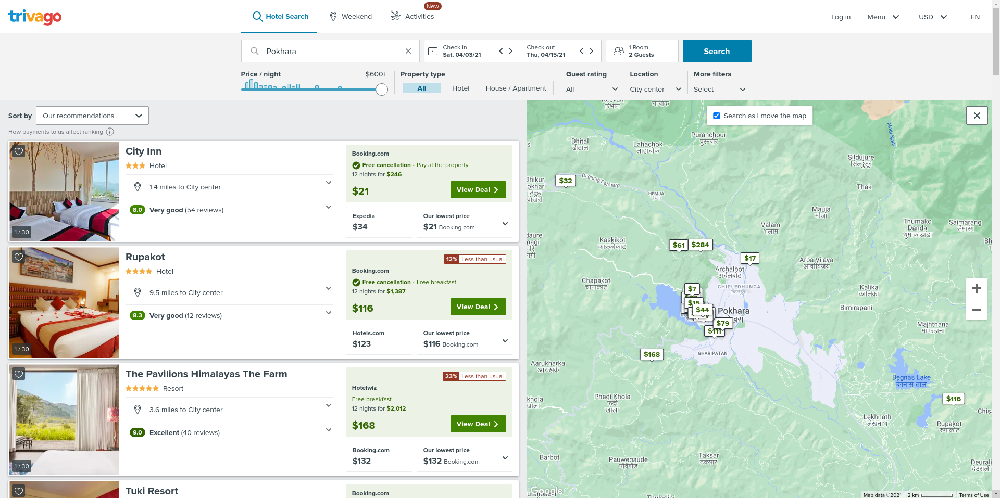

Hospitality Industry
As we all know hospitality industry is one of the contributing sectors for any country's economy. Both developing nations and developed nations have invested a huge amount of resources in the hospitality industry and the industry has provided a lot of employment directly or indirectly. The hospitality industry is lucrative but it is a quite risky one too. The industry has to update itself now and then, has to provide the best services to its customer, and should be error-free. This is where the software shines in the hospitality industry. Using various software, leading players in the hospitality industries have been able to provide new experiences to its customer and are close to perfect for its services facility.
The Change
Earlier whenever people used to travel from one place to another, they would have to look after every hotel and resort where they could find a good service. This would sometimes take people to undesirable places. Similarly, travelers were forced to look after accommodation by themselves. This is a quite hectic process and quite unreliable too. But as the internet grew up and the web got stronger, new websites were launched to address the issue thatwas faced by travelers often. Online Booking Systems were introduced where people could book their hotels and restaurant with few clicks from their mobiles. This saved a lot of time and effort for travelers. Similarly, hospitality service providers were able to know about their upcoming guests, predict the arrival rate and get more insight into people's response towards their services. Overall this made the industry much more simple and easy to operate. Some of the leading giants who created the changes in their the respective field is: Airbnb, Tripadvisor,Trivago, and so on.

Quantas Hotels Online Booking and Reservations System

Trivago Online Booking and Reservations System
The Reality
Currently, online booking systems are the leaders who are using programming and coding to their full potential. Customers can track their hotel's destination using GPS. Both customer and service providers can rate their counterparts and provide an insight on how they are to any other future reference. Travelers can find new service providers just with few clicks on their smart devices. Service providers are implementing bots that could help them with repetative tasks such as addressing customers in reception, providing details on social media. Customers can find any kinds of services that they need just with a few clicks in their mobile apps. And this has changed the user experience a lot. Customers should not worry about finding services and wonder if they would get better service or not. Due to coding, they are just a few clicks away from knowing every detail of their service provider. Similarly, service providers can know about their customers, their behavior, and their feedback with ease. Moreover, different governments have also accepted the changes that coding has brought to this industry. So many governments have launched their apps and platform where new travelers and visitors can know about their country, culture, and know-how traveler can spend quality time in their nation.
Future
Coding is sure to make an impact in the hospitality industry more than ever. The greatest change that coding is going to bring is AR/VR technology in hospitality services. Customers can virtually feel any kind of service that they desire to use. First-time travelers can explore any place remotely. Virtual Reality can change the whole landscape of the hospitality industry. More use of apps and mobile services can lead to better performance in the industry. Human errors can be reduced drastically. The current scenario of booking services will be easy than now. New travelers can get to learn about new places and can plan their trips accordingly. Overall coding will bring more easiness and new changes in the field.